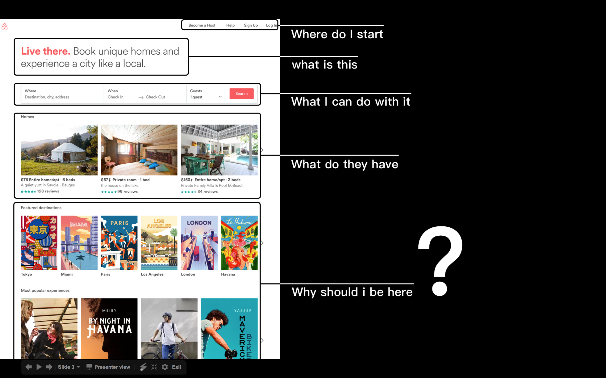
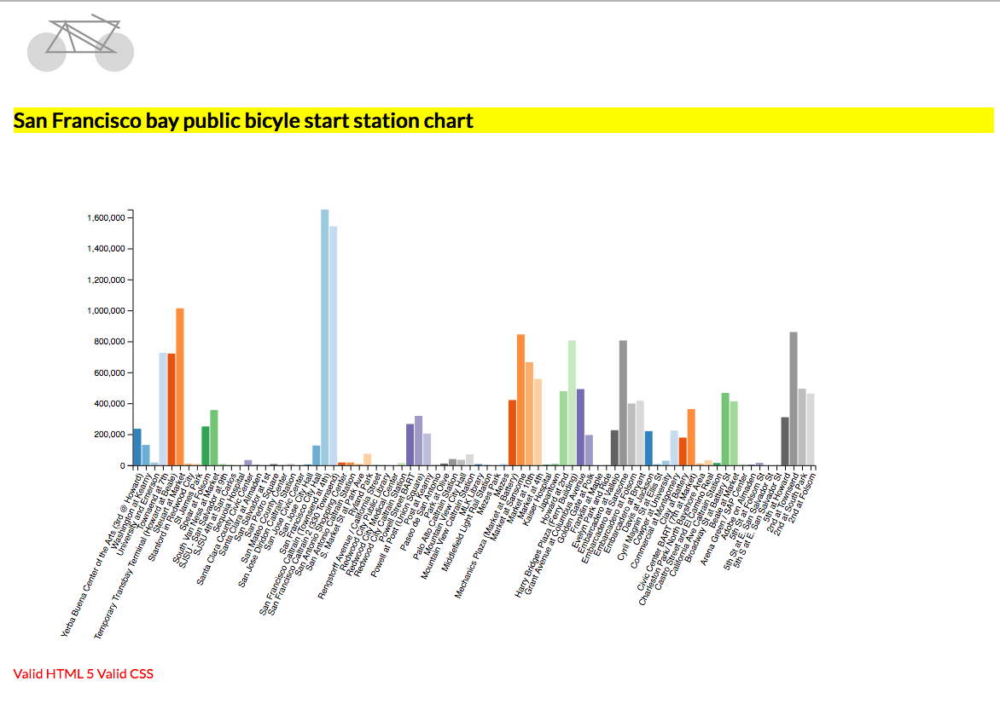
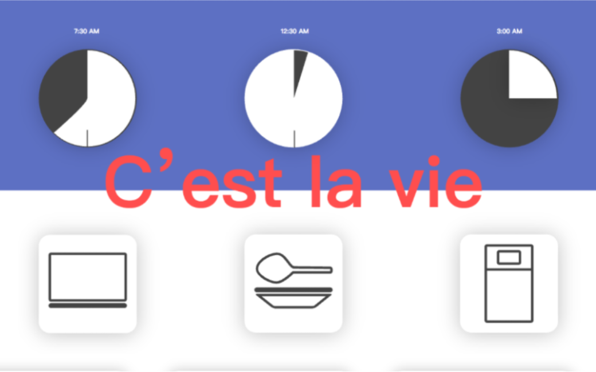

Mar 7
“What is this? ” “what do they have here?” “what can i do here?” “What should i be here- and not somewhere else ?” “Where do i start?” Krug prompted this five questions in his book Don’t make be think Chapter 7. Reflecting on his points in this book, I noticed a great example that answers his questions Airbnb website design. Airbnb’s homepage gave exactly five answer to krug’s questions. “Live here. book unique homes and experience a city like a local.” Airbnb’s large slogan attract the user with precise introduction to their product. This web is for unique home and local experience. “Live here.” is mark with symbolic color. “what do they have here?” Airbnb provides search box in the center of main page. User can use their product in first impression. “what can i do here?” After search tool, homepage provides more information about local experience. Arrows are symbols that guide user to explores. “What should i be here- and not somewhere else ?” Airbnb distinct itself from other products in many where. One way is its design. Feature destination rather than provides postcard photographs. Airbnb provides artistic illustration. This companies show their emphasis on experience. “Where do i start?” Airbnb also guides user unobtrusively. On the top of page, it provides where do people sign in, sign up and help search tool and book. These guides prompts user but they are not lofty. One example is when people scroll down they the help search box will appear on the top of the view. work cited Krug, Steve. Don't make me think!: a common sense approach to Web usability. Berkley: New Riders, 2013. Print.
Feb 21
This website visualized 100000 data from government. This website use d3.js to visualize the data.
studio5Feb 14
This website I designed to visualize my day. This task I try to use some material design concept. color theory to make visualization more user friendly.
studio4Feb 7
This website I designed to visualize my journey during winter break. This animation vividly show my route. Hover the point on the map. The divs show the gallary of my photos that I took during the journy.
studio3Jan 31

SoundCloud's user interface is simple and straight forward, this is a good thing. By default, the home page highlights features available on the platform. Early startups benefit from this because they are trying to get users to use their product or service. There are some slight annoyances: some pages scroll vertically and not horizontally - consistency is important in UI design. Some elements pop up over other elements and can make the layout look really messy. The close image button is very small and not too close to the image – I’m sure most people would look at the top right hand side of the image for a close button rather than the top right hand side of the entire page… (You can play ‘Where’s Wally?’ with the close button on the image above, it’s there, honest.) Annoyances aside, its great. I truly believe Myspace could make a comeback, this is far from a social media prediction on my my behalf, it’s now down the the marketing and promotion, but as a message to Timberlake; if it doesn’t go quite right, don’t fire the designers, they’ve done a great job.
slideshareJan 11

Once they have established the website’s product search and online shopping capabilities, users will most likely want to take advantage of those features right away—starting with search. Amazon uses cookies to keep a user logged in, and that user’s shopping habits are tracked and stored server-side. This is a good enhancement, because it dynamically customizes the user’s experience based on prior searches, page views, wish-list additions, written reviews and, ultimately, purchases.